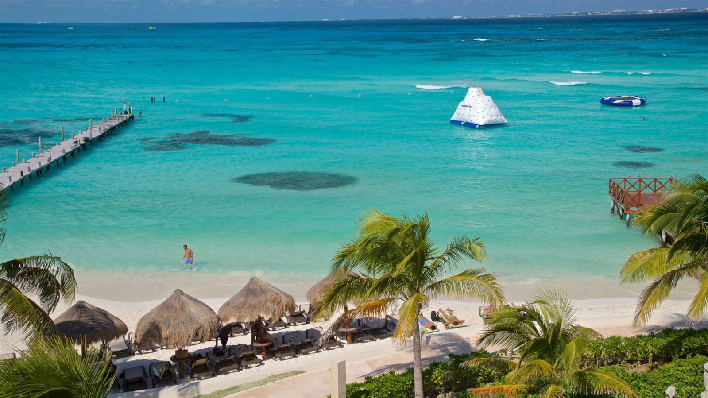

Cancún

Cancún es famoso por sus playas de arena blanca y aguas cristalinas.
Chichén Itzá

Chichén Itzá es una de las siete maravillas del mundo moderno.
Puerto Vallarta

Puerto Vallarta es uno de los destinos turísticos más visitados de México.